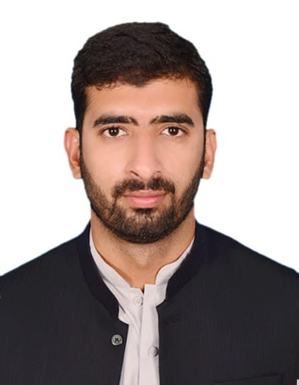

Muhammad Mouid Shabbir

Law Enforment|Biomedical Engineer|Web Developer|IoT Embedded Engineer
Professional Summary
Graduated in Electronics Engineering, working as Biomedical Engineer BS(17) in Punjab Govt, also having served as Law Enforment Officer in Punjab Police, having keen interest in programming languages like C/C++, Assembly language .x86 & MCU 8051, PLC-Ladder logic, Arduino, MATLAB, FPGA, .Net infrastructure have a clear hand on software like Siemen Step7-Microwind for S7-200, Xilinx ISI, Autocade, Adobe Photo Shop, Ethereum (as Block chains), NS3 and MS (word, Excel, Power Point) as well. Attended different seminar on “IoT, Internet security, PLC, Computer networks, Machine learning”
Education
-
B.Sc. Electronic Engineering-IUB CGPA 3.35/4.0
(2014-2018)
-
6th Probationer Class Course-PCS
(2021-2022)
-
Elite Combat Orientation-EPTS
(2023)
Work Experience
- MATLAB and IoT (circuit + code) developer at Fiverr (2018-still working)
- Law Enforcement Officer BS-14(2020-2024)
- Biomedical Engineer BS-17(2024-still working)
Skills
-
Languages:
C/C++, Assembly .x86 & MCU 8051.asm, MATLAB, Arduino, Verilog, PLC Ladder logic, Linux CLI, .Net
Professional Skills:
- Excellent Analytical & Presentation Skills
- Good leadership Qualities & innovative thinking
- Martial Arts
- Firing
- Running
- Boxing
- Judo
- Biomedical devices
-
Engineering Software:
- Electronic workbench, PSpice, Proteus8 (Professional), Xilinx ISE 14, STEP 7-MicroWin, LabView.
- Linux Debian (Ethereum, Network simulator 3, Wireshark, NMAP, Metasploit etc.)
-
Communication Skills:
-
Excellent Communication, Verbal and Literary Skills in English & Urdu Languages.
Awards and certifications
-
RA at HONET, NUST
-
Best Trainee at SSIOUS course PTC, Multan
Other